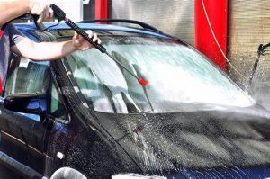

Exterior Detailing
Exterior detailing consists of a few steps and they are as follows. Wheels and Tires first in order to ensure dirt from the wheels dont get on freshly cleaned paint. Next is to work on door jams/engine bay. You may also decide to clean out the gas fill up door. Next is to wash and decontaminate the paint and glass. The next step is optional, However it is important to consider getting a paint correction. Finally, you will want to apply a protection ontop of your paint for ease of maintanance and minor scratch resistance. For paint corrected cars, it is highly recommended that you consider applying a paint coating rather than the more traditional sealant.
Exterior detailing is often the part that is more sought after as it requires more products and tools to achieve a desired level of cleanliness. For instance you must use a variation of products such as a pH-neutral soap. What a pH-neutral soap does is ensure there are not any minerals in the soap that might dry on the surface of the paint. A pressure washer is also highly reccomended when detailing the exterior as it is used before a contact wash to remove any caked on or heavier dirt. Another important factor to look into is the products that your detailer is using. A quality wheel and tire cleaner as well as an All-Purpose Cleaner (APC), a multitude of brushes, wash-mits, and other cleaners are essential to any detailers equipment.
It is important to talk to your local detaler about the chemicals and tools that they use as well as their methods. For instance using the 2 bucket method when washing a car is essential to the preservation of the current state of the clear coat. Detailers will also need a varriety of chemicals to clean the wheels and other crevices, however it is important to make sure no acid based wheel cleaners are used on any raw metals as they can damage its finish. Ensure your detailer is taking all precautions to provide your vehicle with the upmost care possible.